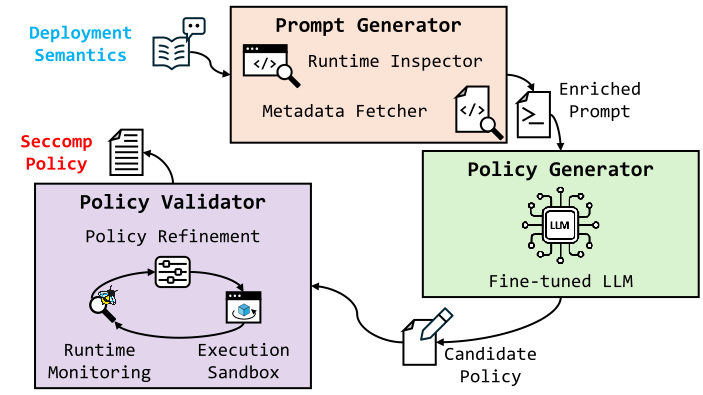

Sparse Specifications
Users often provide only an image name and basic deployment information, with limited knowledge of application internals.
Prompt2Seccomp enriches sparse container specifications with runtime metadata, application documentation, and deployment context to guide fine-tuned LLM inference. It generates candidate Seccomp policies and validates their deployability through sandboxed execution and runtime feedback.
01 / CHALLENGE
Users often provide only an image name and basic deployment information, with limited knowledge of application internals.
Image metadata alone may not explain the intended application behavior or its deployment-specific requirements.
Policy inference can allow unnecessary syscalls or omit required ones, resulting in broad privileges or runtime failures.
02 / DESIGN RATIONALE
Collect runtime metadata and external application documentation to enrich sparse user-provided specifications.
Organize the collected context into structured prompts and use a fine-tuned language model to infer a candidate Seccomp allowlist.
Check policy syntax and enforce the candidate in a sandbox; use runtime feedback to repair denials that prevent intended execution.
03 / SYSTEM ENGINEERING

Uses the Docker SDK for controlled container inspection, BCC/eBPF tracing during initialization, and external documentation retrieval. Fixed templates organize these sources into structured model inputs.
Approach 01 · EnrichConnects to a fine-tuned language model through the OpenAI API. Controlled inference settings and structured output formatting produce a candidate Seccomp policy.
Approach 02 · InferParses and checks the generated policy, then enforces it with runc in a sandbox. An eBPF tracer identifies denied syscalls associated with execution failures and supports iterative allowlist refinement.
Approach 03 · ValidateValidation checks deployability under the intended execution setting; it is not intended to discover the complete syscall set through exhaustive workload profiling.
04 / OUTCOMES
Evaluation used 145 official container images: 50 for fine-tuning and 95 for evaluation. Metrics are measured against a workload-conditioned empirical reference, not a universal ground truth of all possible executions.